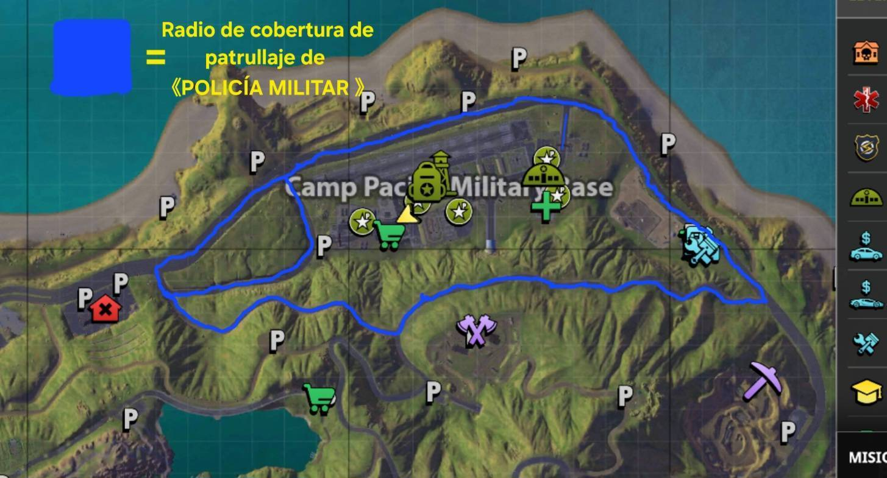
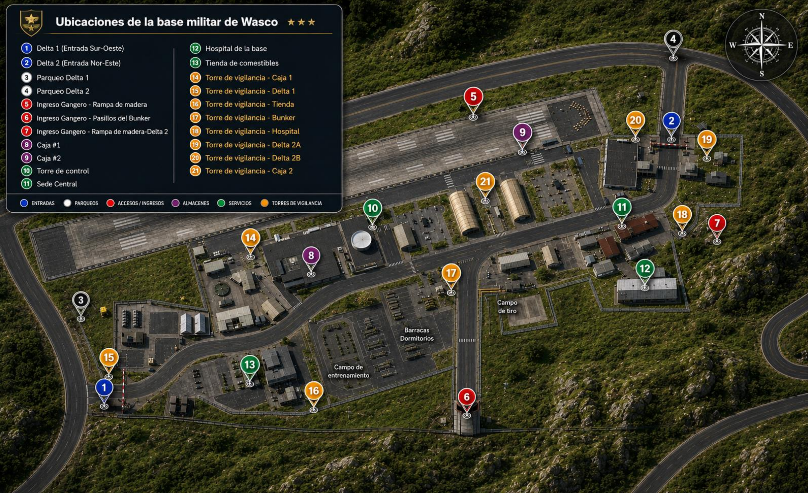

Army de Wasco · Policía Militar
ReglamentoEjército de Wasco · One State
Normas de conducta, sanciones, rangos, procedimientos y macros de la facción.
Procedimiento de patrullajeProcedimiento propio de la Policía Militar · preparación y reglas para salir a patrullar
Preparación
- Ser miembro de PM.
- Tener autorización del Líder de la unidad, Co-Líder o Auxiliares.
- Salir con mínimo 2 miembros de la unidad.
- No pasar los límites de patrullaje.
- Patrullar con camioneta nivel 15 full negra.
- Prender intermitentes (luces de emergencia).
- Mandar la macro de fuera de base.
- Mandar las respectivas macros de advertencia; si no acata las indicaciones, mandar la última macro y abatir.
Sanciones de patrullaje
Para patrullar es necesario cumplir con todas las reglas anteriores. De no ser así, recibirás una advertencia.
🗺️ Ruta de patrullaje
Radio de cobertura de patrullaje de Policía Militar (línea azul) alrededor de Camp Pacific Military Base. No pasar estos límites.

🎬 Video del procedimiento de preparación
⚠️ Salir a patrullar
/flobby [PM] INICIANDO PROCEDIMIENTO ANTI-DISTURBIOS⚠️ Novedades · mandar cada 20 minutos
/flobby [PM] ALREDEDORES SIN NOVEDAD!! 😎⚠️ En caso de abatir a alguien
/me [PM] PROCEDIMIENTO ANTIDISTURBIOS!!!Macros de Policía MilitarMacros exclusivas de la unidad PM
1. /me PRESENTA SU MÁXIMO RESPETO AL SR/SRA [Tu rango] [NOMBRE] [POLICÍA MILITAR], REPORTÁNDOSE FORMALMENTE.
2. /flobby 10-4 [POLICÍA MILITAR] (Copiado, orden recibida)😎
3. /flobby 10-8 [POLICÍA MILITAR] [Tu rango] en servicio.
4. /flobby 10-7 [POLICÍA MILITAR] [Tu rango] fuera de servicio.
5. /me ¡¡EJÉRCITO EN EL TOP!! 😎PM😎
6. /flobby 10-34 [POLICÍA MILITAR] Delta 1. Perímetro asegurado, sin presencia de intrusos.
7. /flobby 10-34 [POLICÍA MILITAR] Delta 2. Perímetro asegurado, sin presencia de intrusos.⚠️ Macros de patrullaje
/flobby [PM] INICIANDO PROCEDIMIENTO ANTI-DISTURBIOS
Salir a patrullar
/flobby [PM] ALREDEDORES SIN NOVEDAD!! 😎
Novedades · mandar cada 20 minutos
/me [PM] PROCEDIMIENTO ANTIDISTURBIOS!!!
En caso de abatir a alguien
Reglamento del EjércitoReglas y castigos para los soldados. Ser soldado requiere paciencia y conocimiento del juego de rol.
Actitud irrespetuosa hacia compañeros y civiles.
Castigo: 1 reprimenda o destitución del soldado (por decisión del líder).Deben dirigirse a los superiores con "Señor" / "Señora".
Castigo: 1 alerta.Se prohíbe cualquier tipo de corrupción.
Solicitar o aceptar sobornos (dinero, bienes o servicios) de miembros de la Facción del Ejército, policías o jugadores a cambio de bienes, dinero o servicios.
Castigo: destitución del soldado.Usar armas de fuego, fuerza física o equipo especial sin previo aviso.
Una razón significativa incluye:
- Amenaza a la vida y la salud de un soldado o de los ciudadanos de la zona.
- Entrada no autorizada al territorio de una base militar.
Los soldados no pueden utilizar un vehículo especial "Carrier" sin permiso de los generales, subalternos o del jefe.
Castigo: 1 advertencia.Incumplimiento de la subordinación / no acatar las órdenes de los generales, subalternos o del jefe.
Castigo: 1 reprimenda o despido del empleado (por decisión del líder).Uso de vehículos de la empresa para fines personales.
Castigo: 1 reprimenda o despido del empleado (por decisión del líder).Incumplimiento de las normas del servidor.
Castigo: 1 reprimenda o despido del empleado (por decisión del líder).Salir de la Base Militar uniformado o con arma.
Solo se puede salir de la base con permiso de los generales, subalternos o del líder.
Castigo: 1 reprimenda.Acumulación de sanciones.
2 advertencias equivalen a 1 reprimenda. 3 amonestaciones implican la destitución del soldado.
Sistema de sanciones
Reglamento oficial del servidorDiscord de la facción · Manual del Ejército, Academia (edición 23JUN2026)
Obligaciones
- Uso correcto de canales: hablar e interactuar únicamente en los canales de texto y voz designados para cada tema. Mantengamos el servidor limpio.
- Respetar la cadena de mando: acatar de forma inmediata las órdenes de los Generales y Coroneles.
- Tener paciencia con los ascensos: los Altos Mandos tienen múltiples tareas de gestión y te atenderán en cuanto estén disponibles.
Prohibiciones y sanciones
- Modificación o eliminación de canales: prohibido borrar, editar o alterar los canales del servidor sin autorización previa.
Sanción: destitución inmediata del rango militar y baneo permanente del servidor de Discord. - Insubordinación: prohibido desobedecer o desafiar una orden directa de los Generales o Coroneles.
Sanción: desde 1 reprimenda escrita hasta la destitución del cargo (a discreción de los Generales). - Invitaciones externas: prohibido invitar al Discord a personas ajenas al juego One State. Es un espacio exclusivo para la facción.
Sanción: suspensión (baneo temporal) de 2 días del servidor de Discord. - Hostigamiento y spam (regla RP13): prohibido presionar, hostigar o spamear a los Altos Mandos o a otros jugadores (por ejemplo, exigiendo entrevistas de ascenso).
Sanción: las correspondientes a falta de respeto y acoso según la gravedad.
Reglas dentro de la base militarLas 5 reglas básicas de la base
- Prohibido estar AFK dentro de la base. Si te ausentas, cierra sesión.
- Prohibido conducir en la base sin permiso de un General (incluye vehículos que aparecen dentro de la base). No está permitido sacar vehículos de la base.
- Prohibido salir de la base: solo puede ser autorizado por Generales o Coroneles, que deberán acompañarlo.
- Se debe respeto a todos los superiores y compañeros.
- Prohibido disparar o usar Taser sin justificación contra civiles, soldados, policías o cualquier persona (incluye jugar con el Taser).
Reglas de Roleplay (RP)Reglas oficiales de One State · castigos en la cárcel de ONESTATE
| Regla | Descripción e infracción | Castigo |
|---|---|---|
| RP1 | DeathMatch (DM). Infligir daño o matar al personaje de otro jugador sin motivo RP. | 20 min de cárcel |
| RP2 | DeathMatch Auto (DMAuto). Infligir daño o destruir el vehículo de otro jugador sin motivo RP. | 20 min de cárcel o 20 min de suspensión de ataque |
| RP3 | Poder NO RP (NP). Exceder las capacidades físicas del personaje RP. | 10 min de cárcel |
| RP4 | Non Role Play (NRP). Violación de la lógica de acción del personaje RP y creación de situaciones poco realistas. | 15 min de cárcel |
| RP5 | Meta Gaming (MG). Usar información del mundo real que el personaje no podría poseer. | Silencio total de voz y del chat mundial 30 min, o hasta 60 min de cárcel |
| RP6 | Rechazo del juego de rol. Evadir el proceso de RP para obtener ventaja personal (p. ej., entrar a una zona verde durante una persecución armada para evitar daño). | 30 a 60 min de cárcel |
| RP7 | Desequilibrio en el RP. Juego de rol desequilibrado mediante los comandos /do, /me, /try. | 20 min de cárcel |
| RP8 | AFK. Falta de actividad en el juego durante más de 5 minutos. | Desconexión del servidor |
| RP9 | DriveBy (DB). Dañar o matar al personaje de otro jugador con cualquier vehículo. | 60 min de cárcel |
| RP9.1 | Mass Drive-By. Dañar o matar intencionalmente a 5 o más jugadores con un vehículo. | Suspensión de la cuenta por 12 horas |
| RP10 | Repeat Kill (RK). Matar o perseguir a un jugador después de su muerte. Incluye regresar al lugar de la muerte en menos de 15 minutos o antes de que termine la situación de RP en la que murió el personaje (no aplica si murió en una situación de no roleo). | 90 min de cárcel |
| RP11 | Incumplimiento de zonas protegidas. Cometer delitos o atacar a otros jugadores en zonas verdes, zonas de trabajo o vehículos de trabajo. Prohibido acechar a quienes salen de zonas verdes y las actividades delictivas cerca de ellas (hospitales, mercados de vehículos). | 30 a 60 min de cárcel o 60 min de suspensión de ataque |
| RP12 | Intento de secuestro poco realista. Secuestros donde los secuestrados superen el 50 % del número de secuestradores, o de más de 5 jugadores a la vez. | 30 min de cárcel |
| RP13 | Facción NRP. Infringir la conducta RP dentro de una facción, incluida la liberación injustificada de jugadores de la cárcel. | Expulsión de la facción, o desde 30 min de cárcel hasta 3 días de suspensión |
| RP14 | Acoso sexual. Cualquier acción sexual no consentida, incluyendo simulaciones y diálogos/acciones explícitas, insultos étnicos y/o LGBT+, o atención excesiva. Toda acción sexual requiere consentimiento OOC y no debe darse en zonas públicas. | Silencio total de voz y del chat mundial 60 min, o suspensión de 24 h a 30 días |
| RP15 | Interrupción de las operaciones de la facción. Provocar intencionadamente a los miembros de la facción por diversión o perturbar sus operaciones. | 30 min de cárcel |
| RP16 | Actos delictivos contra el personal de emergencia. Cualquier acto criminal contra el personal médico de emergencia. | Desde 90 min de cárcel hasta 12 h de suspensión |
Reglas del chat y comunicaciónReglas oficiales de One State
| Regla | Infracción | Castigo |
|---|---|---|
| CHAT1 | Insultos: insultar a jugadores sin razón de RP. | 24 h de suspensión |
| CHAT2 | Familiares: insultar o mencionar en contexto negativo a familiares de otros jugadores, incluso de forma velada. | 240 min de silencio total, o hasta 3 días de suspensión |
| CHAT3 | Discriminación: insultar o mencionar en contexto negativo la religión, política, raza, nacionalidad, género o sexo de otros, incluso de forma velada; también declaraciones sobre temas sociales o políticos sensibles que puedan generar conflicto. | 240 min de silencio total, o 3 días de suspensión |
| CHAT4 | Insulto a la Administración: insultos o lenguaje obsceno hacia cualquier representante de la Administración, incluso de forma velada. | 240 min de silencio total, o 7 días de suspensión |
| CHAT5 | Inundación / Spam: spam o inundación en cualquier chat, incluidos mensajes duplicados con macros o repetitivos/sin sentido entre varios jugadores. | 10 min de silencio en todos los chats |
| CHAT6 | Spam en informes o ayuda: spam en el sistema de informes, solicitudes repetidas sobre el mismo problema o uso abusivo de los canales de retroalimentación, incluso tras recibir respuesta de un administrador. | Silencio en todos los chats de 10 a 30 min |
| CHAT7 | Publicidad no autorizada: de recursos de terceros relacionados temáticamente con OneState. | Suspensión de la cuenta por 10 días |
| CHAT8 | Música en voz: saturar el canal de voz con música u otros sonidos. | 60 min de silencio de voz |
| CHAT9 | Suplantación: hacerse pasar por la Administración o personal de la Empresa para beneficio propio, engañar, difundir información falsa o difamar. | Suspensión permanente de todas las cuentas afiliadas |
| CHAT10 | Engañar a jugadores: cualquier forma de engaño a jugadores del proyecto. | Suspensión permanente de todas las cuentas afiliadas |
| CHAT11 | Engañar a la Administración: en cualquier forma o manifestación. | Suspensión permanente de todas las cuentas afiliadas |
| CHAT12 | Difamación: crítica no constructiva del proyecto o la Empresa; calumnia para socavar la reputación del proyecto. | Suspensión de todas las cuentas afiliadas hasta por 30 días |
| CHAT13 | Amenazas de la vida real: amenazar la vida o salud real de jugadores, trasladar conflictos del juego a la vida real u organizar encuentros reales para resolverlos. | Suspensión de 10 días |
| CHAT14 | Provocar faltas de reglas: engañar o influir en un jugador para que infrinja una regla y sea castigado. | Suspensión de 12 h al provocador |
| CHAT15 | Comportamiento tóxico: acciones, comentarios o actitudes que causen incomodidad moral, en especial contra otros jugadores o la Administración. | Suspensión de 1 a 3 días |
| CHAT16 | Uso de idioma no oficial: las conversaciones en el juego deben ser en el idioma regional del servidor. Excepción: grupos pequeños (5 o menos) que no interfieran con el RP de otros jugadores. | Silencio total de voz y de todos los chats de 10 a 60 min, o suspensión de hasta 12 h (según faltas repetidas) |
| CHAT17 | Divulgación de información personal: divulgar datos personales de otros jugadores, de sus familiares o de sus vidas personales, o alentar a otros a encontrarlos y divulgarlos (también sobre la Administración). | Suspensión permanente de todas las cuentas afiliadas |
Chat de comercio (TCHAT)
| Regla | Infracción (chats de comercio y reclutamiento) | Castigo |
|---|---|---|
| TCHAT1 | Spam en chat de comercio: mensajes no relacionados con el intercambio de objetos ni con el reclutamiento, o repetir los propios mensajes (aunque sean de comercio o reclutamiento), incluidas variaciones de texto que no cambian el contenido. | Silencio en los chats de comercio y reclutamiento de 10 a 60 min, según gravedad |
| TCHAT2 | Información engañosa: anunciar objetos que no existen o no son del vendedor, o publicar información engañosa sobre reclutamiento. Cualquier forma de engaño está prohibida. | Silencio de 10 min en los chats de comercio y reclutamiento |
Todas las demás reglas del proyecto también aplican en los chats de comercio y reclutamiento. El Administrador Principal y el Gestor de Comunidad pueden emitir castigos a su discreción según la gravedad de la falta.
Faltas gravesAbusos (ABUSE), alertas (ALERT) y creadores de contenido (MEDIA)
| Regla | Descripción | Castigo |
|---|---|---|
| ABUSE1 | Abuso del modo de juego: usar errores, vulnerabilidades o características no previstas para obtener ventaja o interrumpir el juego (disparar a través de paredes, salir durante escenas RP, usar tarjetas para salir de la cárcel en castigos de la Administración…). | Suspensión de cuenta de 1 a 30 días |
| ABUSE2 | Abuso de AFK: usar errores o programas de terceros (clickers, macros) para evitar la desconexión por inactividad. | Suspensión de cuenta por 3 días |
| ABUSE3 | Falta sistemática de reglas: faltas repetidas (más de 5). | Suspensión de cuenta de 3 a 30 días, según gravedad, tipo y número |
| ABUSE3.1 | Falta maliciosa de reglas: faltas repetidas y sistemáticas sin arrepentimiento ni corrección; tras varios castigos por ABUSE3 el Manager de Comunidad puede suspender permanentemente. | Suspensión permanente de todas las cuentas afiliadas |
| ABUSE4 | Interrupción a gran escala de RP: interrumpir u obstruir actividades que involucren a muchos jugadores: impedir participar en eventos, matar en los puntos de control o interferir durante la espera previa. | Suspensión de cuenta por 24 h |
| ABUSE5 | Obstrucción del juego o RP: bloquear marcadores de trabajo, entradas/salidas de edificios, etc. | 10 a 60 min de cárcel |
| ALERT1 | Evasión de suspensión: cualquier intento de evadir castigos por faltas. | Suspensión de todas las cuentas afiliadas de 14 días a permanente, según gravedad |
| ALERT2 | Daño a servidores del proyecto: acciones u omisiones dirigidas a dañar la economía, la estabilidad de los servidores o el proyecto en general. | Suspensión permanente de todas las cuentas afiliadas |
| ALERT3 | Software de terceros (trampas): modificar archivos del proyecto o usar programas para alterar datos/valores y obtener ventaja o causar daño. | Suspensión permanente de todas las cuentas afiliadas |
| ALERT4 | Daño a la economía del servidor: transferir divisa u objetos entre jugadores por encima de los límites del servidor. | Confiscación total sin reembolso; si no está disponible o el daño es significativo, suspensión de 30 días a permanente |
| ALERT5 | Difamación en plataformas externas: socavar la reputación del proyecto, sus jugadores, administradores o empleados en canales externos (incluidos los Discord oficiales de OneState y otros proyectos). | Suspensión permanente de todas las cuentas afiliadas |
| ALERT6 | Promoción de proyectos de terceros: anunciar o mencionar otros juegos, productos, proyectos o servicios externos en el juego sin autorización del Manager de Comunidad. | Suspensión de todas las cuentas afiliadas de 14 días a permanente |
| ALERT7 | Decisión de administración principal: el Administrador Principal y el Manager de Comunidad pueden emitir castigos por faltas no especificadas en esta lista. | A discreción |
| MEDIA1 | Acecho a creadores de contenido: stream sniping o acechar a una personalidad mediática durante una transmisión, interferir con la grabación o transmisión en vivo, interrumpirla o crear obstáculos. | Suspensión de cuenta de 1 a 24 h |
Reglas del evento “Robo de Material”
- Prohibido disparar a través de paredes u objetos.
- Prohibida la comunicación entre vivos y muertos.
- Prohibido subir estructuras sin escaleras.
- Prohibido ingresar a los 4 puntos verdes durante el evento: Torre de Control (TC), Sede Central (SC), Farmacia (Medicinas) y Tienda (Comestibles).
- Prohibido disparar a los administradores.
Las macros deben usarse en todas las interacciones de RP, excepto durante “Robo de Material” o “Toma de territorio” cuando la acción ocurre dentro del área delimitada. Si se dispara hacia afuera del territorio, deben utilizarse las macros.
Rangos y responsabilidadesLa cadena de mando debe cumplirse en todo momento
Farming y experiencia
Repetir tareas o misiones para acumular experiencia (EXP): ingresar en TRABAJO: GUARDIA, seleccionar nivel (Recluta / Especialista / Experto / Élite) y pulsar INICIAR; completar el recorrido del mapa; continuar o cancelar para recoger los puntos de EXP. También suman las tareas diarias/semanales de la facción (MENÚ → TAREAS).
Al completar la barra de experiencia, puede rendir examen de ascenso con el personal autorizado.
Preguntas para ascensoLas entrevistas las realizan oficiales desde el grado de Coronel. Para rangos superiores decide el liderazgo de la facción.
- Pedir el registro de trabajo y verificar la barra de experiencia.
- Efectuar la entrevista con las preguntas del grado correspondiente.
- Subir la foto del registro de trabajo y del entrevistado con el saludo en Discord › Facción Ejército de Wasco › #Ejercito-de-wasco › Nuevos ascensos, con el formato obligatorio.
- Indicar al entrevistado que será ascendido por un oficial de traje una vez aprobada la entrevista.
Recluta → Cabo
- ¿Qué es RP13?
- ¿Qué es RP14?
Cabo → Sargento
- ¿Cuáles son las obligaciones de tu rango actual y del rango al que quieres ascender?
- ¿Qué es RP13?
- ¿Qué es RP14?
Sargento → Sargento Primero
- Obligaciones del rango actual y del siguiente
- ¿Qué es RP13? / ¿Qué es RP14?
- ¿Cuáles son las 5 reglas básicas de la base?
Sargento Primero → Sargento Mayor
- Obligaciones del rango actual y del siguiente
- ¿Qué es RP13? / ¿Qué es RP14?
- ¿Cuáles son las 5 reglas básicas de la base?
- ¿Cuáles son las reglas del evento “Robo de Material”?
Sargento Mayor → Teniente
- Obligaciones del rango actual y del siguiente
- ¿Qué es RP13? / ¿Qué es RP14?
- ¿Cuáles son las 5 reglas básicas de la base?
- ¿Cuáles son las reglas del evento “Robo de Material”?
- ¿Cuáles son las 10 reglas del ejército?
Teniente → Capitán
- Obligaciones del rango actual y del siguiente
- ¿Qué es RP13? / ¿Qué es RP14?
- ¿Cuáles son las 5 reglas básicas de la base?
- ¿Cuáles son las reglas del evento “Robo de Material”?
- ¿Cuáles son las 10 reglas del ejército?
- (Ejercicio didáctico) Indicar cada zona de la base con sus respectivos nombres
Mapa de la baseUbicaciones de la base militar de Wasco · Camp Pacific Military Base

Toca el mapa para abrirlo a tamaño completo. Zonas sin numerar: Barracas / Dormitorios, Campo de entrenamiento y Campo de tiro.
Entradas
- 1Delta 1 (Entrada Sur-Oeste)
- 2Delta 2 (Entrada Nor-Este)
Parqueos
- 3Parqueo Delta 1
- 4Parqueo Delta 2
Accesos / Ingresos
- 5Ingreso Gangero · Rampa de madera
- 6Ingreso Gangero · Pasillos del Bunker
- 7Ingreso Gangero · Rampa de madera · Delta 2
Almacenes
- 8Caja #1
- 9Caja #2
Servicios
- 10Torre de control
- 11Sede Central
- 12Hospital de la base
- 13Tienda de comestibles
Torres de vigilancia
- 14Caja 1
- 15Delta 1
- 16Tienda
- 17Bunker
- 18Hospital
- 19Delta 2A
- 20Delta 2B
- 21Caja 2
Permisos
Permiso de salida de la base
Solicitar en Discord › Facción Ejército de Wasco › #Ejercito-de-wasco › Permisos para salir de la base y esperar aprobación.
Permiso de vacaciones
Solicitar en Discord › Facción Ejército de Wasco › #Ejercito-de-wasco › Permisos para vacaciones y esperar aprobación.
Macros del EjércitoDeben utilizarse en todas las interacciones de RP
/me PRESENTA SU MÁXIMO RESPETO AL SR/SRA [RECLUTA] [NOMBRE], REPORTÁNDOSE FORMALMENTE.
/do ¡Taser! ¡Taser! Descarga eléctrica aplicada al individuo para su inmovilización y control de la situación.
/do ¡Fuego! Se responde en defensa propia o de personas en riesgo cercano.
/flobby 10-4 (Copiado, orden recibida)
/me Recuerde: acceso no autorizado, armas visibles o alterar el orden infringe normas. Podrá ser neutralizado si persiste. Retírese ahora.
/me Señor/a, habla [RECLUTA] [NOMBRE] del Ejército Estatal. Zona restringida. Guarde sus armas y mantenga distancia de la entrada. ¿En qué puedo asistirle?
/me Ha sido identificado como posible miembro de pandilla. Mantenga las manos visibles y evite movimientos bruscos. Será sometido a verificación.
/me Zona restringida. Si no posee autorización, retírese de inmediato o será intervenido. (Advertencia 1)
/me Mantenga distancia de la entrada y manos visibles. El incumplimiento será considerado una amenaza. (Advertencia 2)
/me Última advertencia. Zona militar restringida. Cualquier incumplimiento será neutralizado. (Advertencia 3)
/flobby 10-8 [RECLUTA] en servicio.
/flobby 10-7 [RECLUTA] fuera de servicio.
/me No posee autorización. Dispone de 5 segundos para retirarse del área. Última orden.
/me 5... /me 4... /me 3... /me 2... /me 1...
/me 0. Amenaza confirmada, abran fuego.
/me Requisitos de ingreso: nivel 6, +18, dominio del español, sin infracciones ni afiliaciones ilegales, ni pertenecer a facción, micrófono funcional y nombre RP debe coincidir con Discord.
/flobby Solicito Código Verde para gestión de vehículo de misión diaria.
/flobby Solicito Código Verde para gestión de patrullaje diario.
/do Control de identidad en curso. Presente documentación válida de inmediato.
/flobby 10-34 Delta 1. Perímetro asegurado, sin presencia de intrusos.
/flobby 10-34 Delta 2. Perímetro asegurado, sin presencia de intrusos.
/flobby 10-33: Presencia de intruso, alerta activa.
/flobby (FDB) fuera de base
/flobby (RAB) regreso a base
/flobby Código Gris. Fuera de servicio, de vacaciones.
/do Abre el maletero, equipa un arma autorizada para defensa personal. Actúa fuera de servicio ante posible amenaza.
/me ¡¡EJÉRCITO EN EL TOP!!